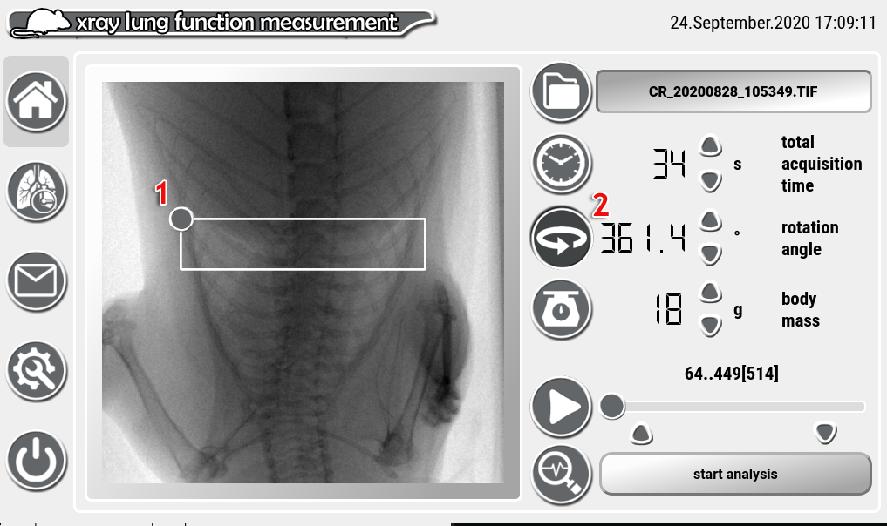

xLFinal – Manual
Introduction:
Breathing modulates the air volume of the lung and whereby the xray attenuation of the chest, which together with the motion itself causes artifacts in CT imaging of living mice. Typically gating techniques such as “retrospective gating” are employed to compensate for that. On the other it is also possible to exploit this effect to measure lung function.
xLFinal supports two different modes: i) planar mode and ii) CT mode. In planar mode the data is assumed to represent a movie of the breathing mouse over time. In CT mode the data should represent a set of angular projections. In both cases the input format is uncompressed unsigned 16bit multiframe-TIF. Whereas, the pixel size of the data does not influence the calculation, the total acquisition time and in case of CT mode the total acquisition angle must be set.
Since the lung function is calculated by analyzing changes in the average brightness of regions within the lung over time, it is very robust to noise and can therefore be applied on data acquired at low dose. However, such data sets typically show strong variations in the background intensity of the xray tube and need to be corrected for that. Thus in planar mode an adaptive moving average filter is applied (see settings panel). This is essentially a two pass approach of a normal moving average filter. In the first pass the normal moving average filtering is performed and the squared distance of all measured values to this function is calculated. In the second pass moving average filtering is performed again using the inverse distances as weighting factors. In this way the effect of strong variations such as the inspiration peaks onto to outcome is reduced.
In CT mode it is assumed that angular projections with 180° difference should essentially have the same intensity and the images are corrected for variations in that. In addition to that the different projection angles, due to the fact that the mouse is not rotational symmetric, generate modifications of the background intensity. However, since this contribution should be cyclic in 360° we perform a complex fourier transformation, take the first N harmonics (see settings panel) and after back transformation remove this contribution from the signal.
In both the planar and CT case the background corrected signal is split with a level function into breathing events and baseline and then parameterized (see result panel section).
The software is organized in 5 panels (figure 1 1-5).
home panel: is used to load and display the data set, set major parameters like total acquisition time and to start the analysis.
The result panel: displays the post-processed that was used as basis for the calculation for visual comparison as well as the obtained results.
The message and info panel displays error messages as well as this manual.
The settings panel allows for adjustment of the three major parameters and displays explanation images for all of them.
The shut-down panel is to initiate closing the software.
Press 1-5 to activate the different panels. Six indicates the display of the data set which is also used to position the analysis regions (white). A single click onto the image opens additional buttons described below. 7 opens the data import window. Eight shows the total acquisition time which is important for calculating the frame rate of the data and whereby the correct lung function parameter. The value can be changed either by using the up/down-buttons or by clicking on the number and using the number input dialog. Nine is used to switch between planar and CT mode. Ten allows adjusting the body mass of the mouse. Eleven can be used to play or stop the data stream. The software tries the data stream with the correct frame rate. Hence the data is streamed and not loaded into the memory completely the playback can differ if your data storage device is not fast enough. With the slider you can move to a specific frame. Left click on the slider sets either the lower or upper limit for the frames, which is also indicated in the text {lower limit … upper limit [total amount of frames]}. To remove the limits click onto the small buttons below the slider. Twelfth starts the analysis and once completed switches automatically to the result panel.
In the “browse directory” section you can navigate to the import directory. Once selected by either enter, return or left click all containing *.tif files are listed in the “select multiframe TIF-file” section and the first is pre-selected by default and the keyboard focus is moved to this box.
Note: Only unsigned 16bit uncompressed *.tif files are supported.
The selected file can now either be imported by pressing return or enter or by clicking the “import selected” button (4). The import can be canceled clicking button (3).
By clicking onto the image the buttons 1-3 can be displayed or hidden. (1) can be used to mirror the data vertically (2) to mirror it horizontally in case the position of the mouse was different than expected. Button (3) shows and hides the region control points. Dark gray filled circles like (4) can be used to modify the corner point of the region, empty circles like (5) can be used to modify the curvature of the boundary.

In CT mode a simple rectangle region is used that can be resized by dragging the corner point (1) and moved by clicking into the rectangle itself. Make sure that the lung is within the region at all angles and that also the heart is included if you are interested to measure the heart beat. In addition, please set the correct total rotation angle (2).
The start and end frame can be selected by clicking the handle of the slider. (1) indicates the position of the start point, (2) the position of the end point. To change the position click the slider handle again and the point closest to it will be readjusted. To reset the limits click onto the specific marker (1 or 2). The numerical value of start and end point is displayed above.
The result panel can appear in two different ways (Figure 2a and b), depending if the software was set to planar or CT mode.
In 1 the post-processed data is displayed for either the left lung lobe, the right lung lobe or for the entire lung which can be changed using the drop down menu (3). The gray rectangle indicates the analyzed region of the data stream. The dash-dotted line indicates the level that has been used to separate breathing peaks from the base line. The black dots label the detected breathing peaks. The small rectangles before the peak indicate the begin of the inspiration and the rectangles after the peak (calculate as intersection with the level function) split the curve in an inspiration and a baseline phase. All parameters are calculated for each breathing event separately and are displayed as mean+-standard deviation and are listed in section 2. The button for allows exporting the data in a *.csv – file. The file will be automatically named with the data set and the current time and is placed together with an image of the graph in the current directory.
Hence the data situation is different than in the planar mode and typically the frame rate is lower not all of the parameters can be calculated. However, the data display is organize in the same way. One indicates the graphical display of the post-processed data. The gray outer circular line is the average xray attenuation in the region of interest over the rotation angle, already after suppressing the intensity fluctuations of the xray tube. The continues black graph shows the filtered breathing curve with the black circles indicating the detected breathing peaks and the rectangles indication start inspiration and end expiration time points. The dash-dotted line symbolizes the level function used for detecting the breathing peaks. The light sector shows the angular region used for the analysis as selected in the home panel. Since the trend of the x-ray tube cannot completely removed it is important to at least cut a bit of the frames close to the start and end of the angular range. Two displays the obtained results and 4 allows to export the results as *.csv together with an image of the graph.
Planar mode |
|||
Abbreviation |
Name |
calculate as |
comment |
# |
Amount of breathing events |
Number of detected peaks in the selected frame range |
|
br [s] |
Breathing rate |
Average time between the breathing peaks |
Typically more a measure of the anesthesia than of pathological changes. |
in [s] |
Inspiration time |
Average time between start and peak of inspiration phase |
Modified for instance in fibrosis, but needs to be related to br. |
iso |
Isotrophy Index |
Ration between in and br |
A reliable measure for shortening of inspiration. |
aniso |
Anisotrophy Index |
Ratio between in and expiration time (time between peak and cross-section with the level function) |
Measures for instance changes in the elastic recoil. |
EIV |
“End inspiratory volume” |
Area under the curve between start inspiration and start baseline phase |
Since it is effected by the filtering and also by for instance changes in the lung parenchyma it is not directly related to a volume but shows a strong correlation with EIV. |
AT |
“air trapping” |
Area under the curve in the baseline phase. |
Since it is effected by the filtering and also by for instance changes in the lung parenchyma it is not directly related to a volume but shows a strong correlation with air-trapping events or degree of inflammation. |
tau [Hz] |
Decay rate |
Mono exponential decay rate starting from the peak to the starting of the next inspiration phase. |
Is typically a good measure of changes in lung tissue elasticity. |
hr [bpm] |
Heart rate |
Peak in the frequency domain above 340 bpm. If no frequency can be identified in this range with a power at least two times above the baseline, “NaN” is displayed. |
The hr is detected in a certain frequency range. If the region of interest does not contain the heart, the heart rate is far from being normal or the filtering settings are to high it might not be analyzable. |
CT mode |
|||
Abbreviation |
Name |
calculate as |
comment |
# |
Amount of breathing events |
Number of detected peaks in the selected frame range |
|
br [s] |
Breathing rate |
Average time between the breathing peaks |
Typically more a measure of the anesthesia than of pathological changes. |
du [s] |
Duration |
Average duration of the breathing as measured as distance between start inspiration point and end expiration point. |
|
in[s] |
Inspiration time |
Average time between start and peak of inspiration phase |
Modified for instance in fibrosis, but needs to be related to br. |
iso |
Isotrophy Index |
Ration between in and br |
A reliable measure for shortening of inspiration. |
hr [bpm] |
Heart rate |
Peak in the frequency domain above 340 bpm. If no frequency can be identified in this range with a power at least two times above the baseline, “NaN” is displayed. |
The hr is detected in a certain frequency range. If the region of interest does not contain the heart, the heart rate is far from being normal or the filtering settings are to high it might not be analyzable. |
In the instruction panel (1) this manual is displayed. In (2) information and error messages are shown. In case of an error a red mark in section (3) will appear.
There are only 3 parameter to adjust. In CT Mode parameter (1) “harmonics” is used to remove the background variation due to the shape of the mouse chest. Typically a value of 10 is sufficient. Higher harmonics can interfere with the peak detection and lower values leave uncompensated background. The parameter is only used in CT Mode. (2) is the trend correction time window that is been used to perform an adaptive moving average filtering of the data, mainly to remove intensity variations from the xray tube. A low value could interfere with the shape of the peaks a to high value probably does not remove the complete trend. (3) is the level in percentage used to split the resulting breathing curve into breathing events (above the threshold) and baseline (below the threshold) and affects therefore the calculated parameter. Thus, we strongly suggest to keep it constant in one study. (4) shows a short explanation of the parameter that has currently been modified. (5), (6) and (7) are used to store, load and reset the parameter.
(1) can be used to shut down the software. (2) lists the publications in which this software or its predecessors have been used.
Please cite one of it if you use the software for your research.
C.Dullin 26.09.2020